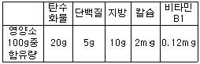

제과기능사 (2010-01-31 기출문제)
1과목: 제조이론
1. 아이스크림 제조에서 오버런(over-run)이란?
- 교반에 의해 크림이 체적이 몇 % 증가하는가를 나타내는 수치
- 생크림 안에 들어 있는 유지방이 응집에서 완전히 액체로부터 분리된 것
- 살균 등의 가열조작에 의해 불안정하게 된 유지의 결정을 적온으로 해서 안정화시킨 숙성 조작
- 생유 안에 들어있는 큰 지방구를 미세하게 해서 안정화하는 공정
(정답률: 65%)

2. 반죽의 비중에 대한 설명으로 맞는 것은?
- 같은 무게의 반죽을 구울 때 비중이 높을수록 부피가 증가한다.
- 비중이 너무 낮으면 조직이 거칠고 큰 기포를 형성한다.
- 비중의 측정은 비중컵의 중량을 반죽의 중량으로 나눈 갑으로 한다.
- 비중이 높으면 기공이 열리고 가벼운 반죽이 얻어진다.
(정답률: 56%)
3. 스펀지케이크 제조시 더운 믹싱방법을 사용할 때 계란과 설탕의 중탕 온도로 가장 적합한 것은?
- 23℃
- 43℃
- 63℃
- 83℃
(정답률: 81%)
4. 도넛 설탕 아이싱을 사용할 때의 온도로 적합한 것은?
- 20℃ 전후
- 25℃ 전후
- 40℃ 전후
- 60℃ 전후
(정답률: 77%)
5. 비스킷을 제조할 때 유지할 때 유지보다 설탕을 많이 사용하면 어떤 결과가 나타나는가?
- 제품의 촉감이 단단해진다.
- 제품이 부드러워진다.
- 제품의 퍼짐이 작아진다.
- 제품의 색깔이 엷어진다.
(정답률: 66%)
6. 퍼프페이스트리의 휴지가 종료되었을 때 손으로 살짝 누르게 되면 다음 중 어떤 현상이 나타나는가?
- 누른 자국이 남아있다.
- 누른 자국이 원상태로 올라온다.
- 누른 자국이 유동성 있게 움직인다.
- 내부의 유지가 흘러나온다.
(정답률: 88%)
7. 일반적인 제과작업장의 시설 설명으로 잘못된 것은?
- 조명은 50 lx 이하가 좋다.
- 방충ㆍ방서용 금속망은 30메쉬(mesh)가 적당하다.
- 벽면은 매끄럽고 청소하기 편리하여야 한다.
- 창의 면적은 바닥면적을 기준하여 30% 정도가 좋다.
(정답률: 68%)
8. 포장된 제과제품의 품질 변화 현상이 아닌 것은?
- 전분의 호화
- 향의 변화
- 촉감의 변화
- 수분의 이동
(정답률: 70%)
9. 스펀지케이크에 사용되는 필수재료가 아닌 것은?
- 계란
- 박력분
- 설탕
- 베이킹파우더
(정답률: 80%)
10. 반죽무게를 이용하여 반죽의 비중 측정시 필요한 것은?
- 밀가루 무게
- 물 무게
- 용기 무게
- 설탕 무게
(정답률: 75%)
11. 다음 제품 중 거품형 케이크는?
- 스펀지케이크
- 파운드케이크
- 데블스푸드케이크
- 화이트레이어케이크
(정답률: 75%)
12. 파운드케이크 반죽을 가로 5㎝, 세로 12㎝, 높이 5㎝의 소형 파운드 팬에 100개 패닝하려고 한다. 총 반죽의 무게로 알맞은 것은? (단, 파운드케이크의 비용적은 2.40 ㎤/g이다)
- 11㎏
- 11.5㎏
- 12㎏
- 12.5㎏
(정답률: 48%)
13. 슈(choux)의 제조 공정상 구울 때 주의할 사항 중 잘못된 것은?
- 220℃ 정도의 오븐에서 바삭한 상태로 굽는다.
- 너무 빠른 껍질 형성을 막기 위해 처음에 윗불을 약하게 한다.
- 굽는 중간에 오븐 문을 자주 여닫아 수증기를 제거한다.
- 너무 빨리 오븐에서 꺼내면 찌그러지거나 주저앉기 쉽다.
(정답률: 86%)
14. 파운드케이크의 표피를 터지지 않게 하려고 할 때 오븐의 조작 중 가장 좋은 방법은?
- 뚜껑은 처음부터 덮어 굽는다.
- 10분간 굽기를 한 후 뚜껑을 덮는다.
- 20분간 굽기를 한 후 뚜껑을 덮는다.
- 뚜껑을 덮지 않고 굽는다.
(정답률: 65%)
15. 도넛의 튀김 온도로 가장 적당한 것은?
- 140 ~ 156℃
- 160 ~ 176℃
- 180 ~ 196℃
- 220 ~ 236℃
(정답률: 90%)
16. 제품이 오븐에 갑자기 팽창하는 오븐 스프링의 요인이 아닌 것은?
- 탄산가스
- 알코올
- 가스압
- 단백질
(정답률: 59%)
17. 오븐에서 나온 빵을 냉각하여 포장하는 온도로 가장 적합한 것은?
- 0 ~ 5℃
- 15 ~ 20℃
- 35 ~ 40℃
- 55 ~ 60℃
(정답률: 79%)
18. 다음 발효과정 중 손실에 관계되는 사항과 가장 거리가 먼 것은?
- 반죽온도
- 기압
- 발효온도
- 소금
(정답률: 60%)
19. 어린반죽으로 만든 제품의 특징과 거리가 먼 것은?
- 내상의 색상이 검다.
- 쉰 냄새가 난다.
- 부피가 작다.
- 껍질의 색상이 진하다.
(정답률: 65%)
20. 제빵에서 탈지분유를 1% 증가시킬 때 추가되는 물의 양으로 가장 적합한 것은?
- 1%
- 5.2%
- 10%
- 15.5%
(정답률: 60%)
2과목: 재료과학
21. 불란서빵 제조시 굽기를 실시할 때 스팀을 너무 많이 주입했을 때의 대표적인 현상은?
- 질긴 껍질
- 두꺼운 표피
- 표피에 광택부족
- 밑면이 터짐
(정답률: 68%)
22. 빵의 품질평가에 있어서 외부평가 기준이 아닌 것은?
- 굽기의 균일함
- 조직의 평가
- 터짐과 광택부족
- 껍질의 성질
(정답률: 77%)
23. 팬기름의 사용에 대한 설명으로 거리가 먼 것은?
- 발연점이 높아야 한다.
- 산패에 강해야 한다.
- 반죽무게의 3~4%를 사용한다.
- 기름이 과다하면 바닥 껍질이 두껍고 색이 어둡다.
(정답률: 67%)
24. 식빵 제조시 수돗물 온도 10℃, 실내온도 28℃, 밀가루 온도 30℃, 마찰계수 23일 때 반죽온도를 27℃로 하려면 몇 ℃의 물을 사용해야 하는가?
- 0℃
- 5℃
- 12℃
- 17℃
(정답률: 43%)
25. 식빵 제조 시 1차 발효실의 적합한 온도는?
- 24℃
- 27℃
- 34℃
- 37℃
(정답률: 60%)
26. 냉동반죽법에서 동결방식으로 적합한 것은?
- 완만동결법
- 지연동결법
- 오버나이트법
- 급속동결법
(정답률: 80%)
27. 산화제와 환원제를 함께 사용하여 믹싱시간과 발효시간을 감소시키는 제빵법은?
- 스트레이트법
- 노타임법
- 비상스펀지법
- 비상스트레이트법
(정답률: 71%)
28. 식빵 반죽 표피에 수포가 생긴 이유로 적합한 것은?
- 2차 발효실 상대습도가 높았다.
- 2차 발효실 상대습도가 낮았다.
- 1차 발효실 상대습도가 높았다.
- 1차 발효실 상대습도가 낮았다.
(정답률: 60%)
29. 제빵 제조공정의 4대 중요 관리항목에 속하지 않는 것은?
- 시간관리
- 온도관리
- 공정관리
- 영양관리
(정답률: 75%)
30. 대량생산 공장에서 많이 사용되는 오븐으로 반죽이 들어가는 입구와 제품이 나오는 출구가 서로 다른 오븐은?
- 데크 오븐
- 터널 오븐
- 로터리 래크 오븐
- 컨벡션 오븐
(정답률: 88%)
3과목: 영양학
31. 모노글리세리드(monoglyceride)와 디글리세리드(diglyceride)는 제과에 있어 주로 어떤 역할을 하는가?
- 유화제
- 항산화제
- 감미제
- 필수영양제
(정답률: 65%)
32. 글루테닌과 글라아딘이 혼합된 단백질은?
- 알부민
- 글루텐
- 글로부린
- 프로테오스
(정답률: 83%)
33. 캐러멜화를 일으키는 것은?
- 비타민
- 지방
- 단백질
- 당류
(정답률: 84%)
34. 다음 중 이당류가 아닌 것은?
- 포도당
- 맥아당
- 설탕
- 유당
(정답률: 71%)
35. 제과, 제빵에서 계란의 역할로만 묶인 것은?
- 영양가치 증가, 유화역할, pH강화
- 영양가치 증가, 유화역할, 조직강화
- 영양가치 증가, 조직강화, 방부효과
- 유화역할, 조직강화, 발효시간 단축
(정답률: 75%)
36. 다음 중 유지의 경화 공정과 관계가 없는 물질은?
- 불포화지방산
- 수소
- 콜레스테롤
- 촉매제
(정답률: 53%)
37. 젤라틴(gelatin)에 대한 설명 중 틀린 것은?
- 동물성 단백질이다.
- 응고제로 주로 이용된다.
- 물과 섞으면 용해된다.
- 콜로이드 용액의 젤 형성과정은 비가역적인 과정이다.
(정답률: 68%)
38. 제빵용 물로 가장 적합한 것은?
- 연수(1~60ppm)
- 아연수(61~120ppm)
- 아경수(121~180ppm)
- 경수(180ppm)
(정답률: 87%)
39. 퐁당 크림을 부드럽게 하고 수분보유력을 높이기 위해 일반적으로 첨가하는 것은?
- 한천, 젤라틴
- 물, 레몬
- 소금, 크림
- 물엿, 전화당 시럽
(정답률: 74%)
40. 바닐라 에센스가 우유에 미치는 영향은?
- 생취를 감취시킨다.
- 마일드한 감을 감소시킨다.
- 단백질의 영양가를 증가시키는 강화제 역할을 한다.
- 색감을 좋게 하는 착색료 역할을 한다.
(정답률: 61%)
41. 베이킹파우더 사용량이 과다할 때의 현상이 아닌 것은?
- 기공과 조직이 조밀하다.
- 주저앉는다.
- 같은 조건일 때 건조가 빠르다.
- 속결이 거칠다.
(정답률: 56%)
42. [H3O+]의 농도가 다음과 같을 때 가장 강산인 것은?
- 10-2 ㏖/ℓ
- 10-3 ㏖/ℓ
- 10-4㏖/ℓ
- 10-5 ㏖/ℓ
(정답률: 50%)
43. 밀가루의 점도변화를 측정함으로써 알파-아밀라아제 효과를 판정할 수 있는 기기는?
- 아밀로그래프(Amylograph)
- 믹소그래프(Mixograph)
- 알베오그래프(Alveograph)
- 믹서트론(Mixertron)
(정답률: 87%)
44. 효모의 대표적인 증식방법은?
- 분열법
- 출아법
- 유포자형성
- 무성포자형성
(정답률: 76%)
45. 과자와 빵에 우유가 미치는 영향이 아닌 것은?
- 영양을 강화시킨다.
- 보수력이 없어서 노화를 촉진시킨다.
- 겉껍질 색깔을 강하게 한다.
- 이스트에 의해 생성된 향을 착향시킨다.
(정답률: 72%)
46. 체내에서 물의 역할을 설명한 것으로 틀린 것은?
- 물은 영양소와 대사산물을 운반한다.
- 땀이나 소변으로 배설되며 체온 조절을 한다.
- 영양소 흡수로 세포막에 농도차가 생기면 물이 바로 이동한다.
- 변으로 배설될 때는 물의 영향을 받지 않는다.
(정답률: 83%)
47. 카제인이 많이 들어있는 식품은?
- 빵
- 우유
- 밀가루
- 콩
(정답률: 81%)
48. 다음의 단팥빵 영양가 표를 참고하여 단팥빵 200g의 열량을 구하면 얼마인가?

- 190 kcal
- 300 kcal
- 380 kcal
- 460 kcal
(정답률: 58%)
49. 무기질의 기능이 아닌 것은?
- 우리 몸의 경조직 구성성분이다.
- 열량을 내는 열량 급원이다.
- 효소의 기능을 촉진 시킨다.
- 세포의 삼투압 평형유지 작용을 한다.
(정답률: 71%)
50. 혈당의 저하와 가장 관계가 깊은 것은?
- 인슐린
- 리파아제
- 프로테아제
- 펩신
(정답률: 89%)
4과목: 식품위생학
51. 다음 법정전염병 중 제2군 전염병은?(관련 규정 개정전 문제로 여기서는 기존 정답인 2번을 누르면 정답 처리됩니다. 자세한 내용은 해설을 참고하세요.)
- 파라티푸스
- 풍진
- 발진티푸스
- 한센병
(정답률: 57%)
52. 다음 중 식품접객업에 해당되지 않은 것은?
- 식품냉동 냉장업
- 유흥주점영업
- 위탁급식영업
- 일반음식점영업
(정답률: 76%)
53. 다음 중 세균성 식중독 예방을 위한 일반적인 원칙이 아닌 것은?
- 먹기 전에 가열처리 할 것
- 가급적 조리 직후에 먹을 것
- 설사환자나 화농성 질환이 있는 사람은 식품을 취급하지 않도록 할 것
- 실온에서 잘 보관하여 둘 것
(정답률: 83%)
54. 식중독의 예방 원칙으로 올바른 것은?
- 장기간 냉장보관
- 주방의 바닥 및 벽면의 충분한 수분유지
- 잔여 음식의 폐기
- 날음식, 특히 어패류는 생식 할 것
(정답률: 79%)
55. 다음 중 허가된 천연유화제는?
- 구연산
- 고시폴
- 레시틴
- 세사몰
(정답률: 80%)
56. 다음 중 아플라톡신을 생산하는 미생물은?
- 효모
- 세균
- 바이러스
- 곰팡이
(정답률: 70%)
57. 소독력이 강한 양이온계면활성제로서 종업원의 손을 소독할 때나 용기 및 기구의 소독제로 알맞은 것은?
- 석탄산
- 과산화수소
- 역성비누
- 크레졸
(정답률: 69%)
58. 어패류의 생식과 가장 관계가 깊은 식중독 세균은?
- 프로테우스균
- 장염 비브리오균
- 살모넬라균
- 바실러스균
(정답률: 80%)
59. 알레르기성 식중독의 원인이 될 수 있는 가능성이 가장 높은 식품은?
- 오징어
- 꽁치
- 갈치
- 광어
(정답률: 73%)
60. 밀가루의 표백과 숙성에 사용되는 첨가물의 종류?
- 개량제
- 발색제
- 피막제
- 소포제
(정답률: 64%)